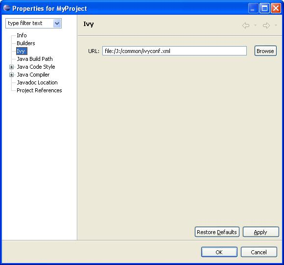

1.2.0
IvyDE can be considered as the merge of two tools:
- Ivy xml files Editor: creation wizard, html preview and completion for Ivy xml tag, attributes but also attributes' values.
- Class path container: Automatic downloads, access "resolve" task from your IDE
Content
Plugin installation
IvyDE has not yet been released within the Apache Software Foundation. For the moment you can use the old location of IvyDE for installation:- the update site : http://update.jayasoft.org/
- download the binaries and unzip it in your eclipse root folder
Eclipse Preference Page

- Preference fields:
- Ivyconf URL : specify here the path to your ivyconf file. Leave it blank to use ivy default resolvers
- Retrieve option : specify here if you want ivy to do a retrieve after the resolve.
If you check retrieve you must provide a the retrieve pattern. Check ivy documentation for pattern explanation.
- Organisation: your company name for ivy editor completion
- Organisation Url: your company web site url for ivy editor completion
Project Preference Page
- Preference fields:
- URL : specify here the path to your ivyconf file in scope of project. Leave it blank to use ivyconf file defined in eclipse properties (see eclipse properties) or use "default" to use ivy default resolvers
Printer Friendly